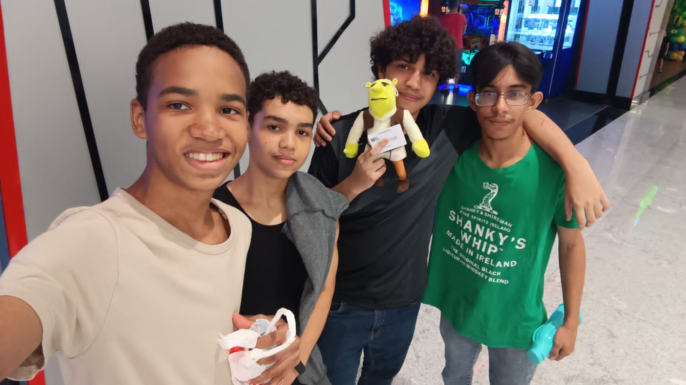

| Foto | Alunos |
|---|---|
 |
The Boys (Vanderson, Luiz, Gilvan, Benício) |
| Aluno | Função / O que fez |
|---|---|
| Vanderson | Auxiliar de Código |
| Luiz | Responsável pela criação da Página Inicial e de toda sua estilização, Menu Suspenso, das abas de Sinopse e Agradecimentos. |
| Gilvan | Testador, Auxiliar de código e responsável pela organização geral dos arquivos. |
| Benicio | Responsável pela criação das abas de Personagens, Login e Quem Somos. |